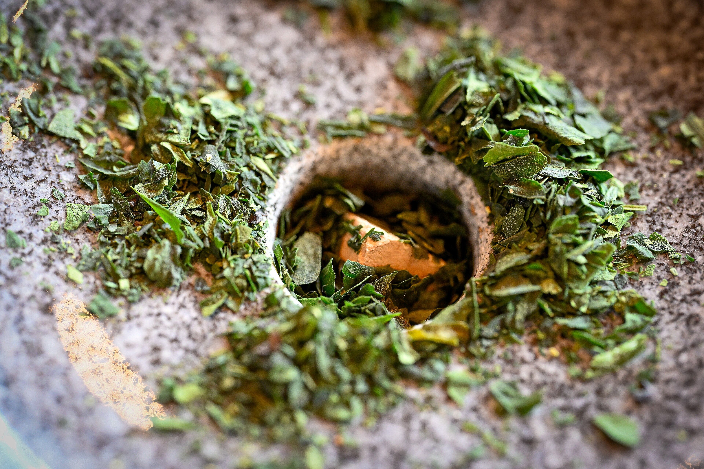
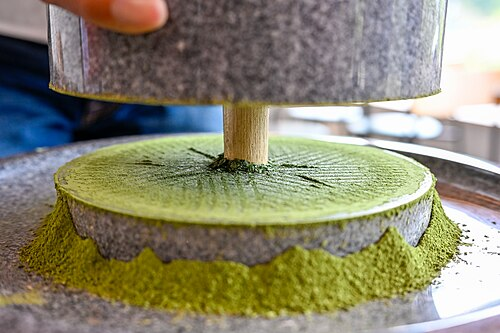

Production
Shade Growing
Matcha production begins weeks before harvest, when tea plants are covered with shade structures made from reed, straw, or cheesecloth. The plants are shaded for two to three weeks, which limits sunlight exposure and slows photosynthesis. This prevents theanine — the amino acid responsible for umami — from converting into bitter-tasting tannins. Shading also increases the concentration of chlorophyll in the leaves, giving matcha its characteristic vibrant green color.
Harvesting and Steaming
Only the youngest, most tender leaves are picked during the first flush of spring. After harvesting, the leaves are steamed at approximately 100°C for 10–15 seconds. This brief steaming softens the leaves and deactivates oxidizing enzymes, preserving the bright color and fresh flavor. Unlike other Japanese green teas such as sencha, the leaves are not rolled after steaming.

Drying
The steamed leaves are dried in specialized processing machines, spread on a conveyor belt at temperatures between 170–200°C, though the leaves themselves only reach about 70°C. This careful temperature control suppresses glycosides and preserves the delicate flavor compounds. The resulting dried, unrolled leaves are called tencha — the raw material for matcha.
Aging and Blending
After drying, tencha is aged for several months in cool, dry conditions. This aging process rounds out the flavor and deepens the umami character. Expert tasters then blend tencha from different batches and cultivars to achieve a consistent, balanced flavor profile. Famous tea houses like Marukyu Koyamaen have maintained their signature blends for generations.
Stone Grinding
The final step is grinding the tencha into a fine powder using granite stone mills. Traditional mills were turned by hand, but modern producers use mechanically turned stone mills that rotate slowly to prevent heat buildup. The grinding rooms are kept cool to protect the tea from degradation. Stone milling produces an extremely fine powder — around 10 to 20 microns — which gives matcha its smooth, creamy texture when whisked with water.

Global Production Today
Japan remains the center of traditional fine matcha production, with famous producing regions in Uji (Kyoto), Nishio (Aichi), and Shizuoka Prefecture. However, surging global demand has driven large-scale production in China — particularly in Zhejiang, Guizhou, and Jiangsu provinces. By 2025, China surpassed Japan as the world's largest matcha producer by volume, exceeding 12,000 tons. South Korea and Vietnam have also invested in matcha production for export, though their methods may differ significantly from traditional Japanese techniques.